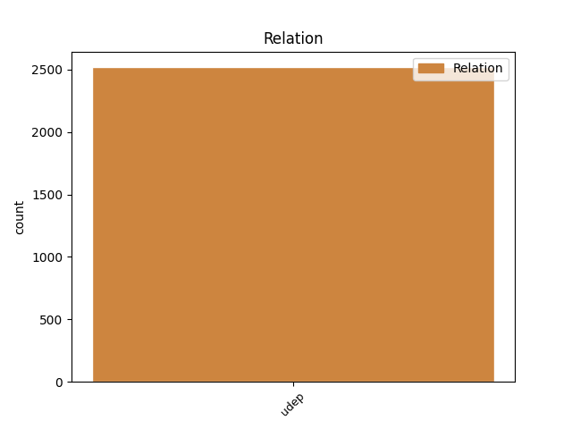
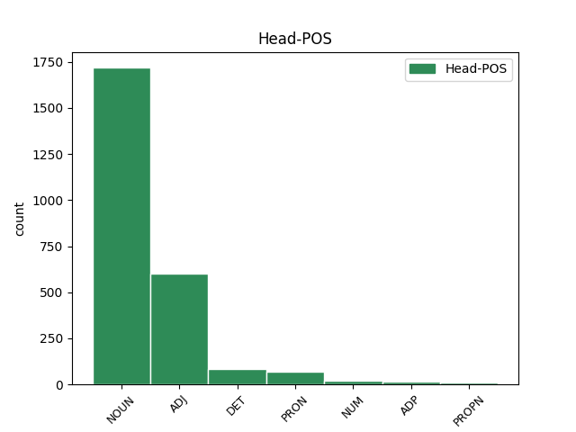
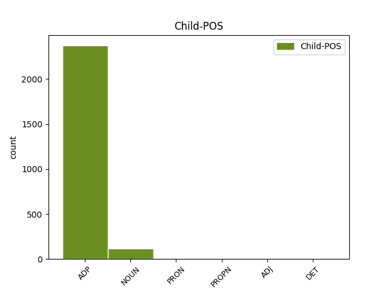

Distribution of features within this leaf



Agreement Rules sorted by frequency.
- When the dependent token is the underspecified dependency(udep) of the head token,
1 Вона _ _ _ _ 0 _ _ _
2 виявила _ _ _ _ 0 _ _ _
3 готовність _ _ _ _ 0 _ _ _
4 виплатити _ _ _ _ 0 _ _ _
5 за _ _ _ _ 0 _ _ _
6 93%-й _ _ _ _ 0 _ _ _
7 пакет _ _ _ _ 0 _ _ _
8 акцій _ _ _ _ 0 _ _ _
9 « _ _ _ _ 0 _ _ _
10 Криворіжсталі _ _ _ _ 0 _ _ _
11 » _ _ _ _ 0 _ _ _
12 24 _ _ _ _ 0 _ _ _
13 млрд _ _ _ _ 0 _ _ _
14 . _ _ _ _ 0 _ _ _
15 200 _ _ _ _ 0 _ _ _
16 млн _ _ _ _ 0 _ _ _
17 ₴ _ _ _ _ 0 _ _ _
18 . _ _ _ _ 0 _ _ _
19 ( _ _ _ _ 0 _ _ _
20 4 _ _ _ _ 0 _ _ _
21 , _ _ _ _ 0 _ _ _
22 8 _ _ _ _ 0 _ _ _
23 млрд _ _ _ _ 0 _ _ _
24 доларів _ _ _ _ 0 _ _ _
25 США _ _ _ _ 0 _ _ _
26 ) _ _ _ _ 0 _ _ _
27 , _ _ _ _ 0 _ _ _
28 що _ _ _ _ 0 _ _ _
29 в _ _ _ _ 0 _ _ _
30 2 _ _ _ _ 0 _ _ _
31 , _ _ _ _ 0 _ _ _
32 4 _ _ _ _ 0 _ _ _
33 рази _ _ _ _ 0 _ _ _
34 перевищує _ _ _ _ 0 _ _ _
35 стартову _ _ _ _ 0 _ _ _
36 ціну _ _ _ _ 0 _ _ _
37 і _ _ _ _ 0 _ _ _
38 в _ _ _ _ 0 _ _ _
39 5 _ _ _ _ 0 _ _ _
40 , _ _ _ _ 0 _ _ _
41 7 _ _ _ _ 0 _ _ _
42 рази _ _ _ _ 0 _ _ _
43 — _ _ _ _ 0 _ _ _
44 суму _ _ _ _ 0 _ _ _
45 , _ _ _ _ 0 _ _ _
46 отриману отриманий ADJ Ap-fsas-ep Aspect=Perf|Case=Acc|Gender=Fem|Number=Sing|VerbForm=Part|Voice=Pass 0 _ _ _
47 за за ADP Spsa Case=Acc 46 udep _ Id=39mm|LTranslit=za|Translit=za
48 підприємство _ _ _ _ 0 _ _ _
49 2004 _ _ _ _ 0 _ _ _
50 року _ _ _ _ 0 _ _ _
51 . _ _ _ _ 0 _ _ _
Disagree Examples:
1 Це _ _ _ _ 0 _ _ _
2 одна один DET Pi--f-sna Case=Nom|Gender=Fem|Number=Sing|PronType=Ind 0 _ _ _
3 з з ADP Spsg Case=Gen 2 udep _ Id=001l|LTranslit=z|Translit=z
4 надзвичайно _ _ _ _ 0 _ _ _
5 важливих _ _ _ _ 0 _ _ _
6 сцен _ _ _ _ 0 _ _ _
7 у _ _ _ _ 0 _ _ _
8 драмі _ _ _ _ 0 _ _ _
9 Лесі _ _ _ _ 0 _ _ _
10 Українки _ _ _ _ 0 _ _ _
11 « _ _ _ _ 0 _ _ _
12 Руфін _ _ _ _ 0 _ _ _
13 і _ _ _ _ 0 _ _ _
14 Прісцілла _ _ _ _ 0 _ _ _
15 » _ _ _ _ 0 _ _ _
16 . _ _ _ _ 0 _ _ _
1 Це _ _ _ _ 0 _ _ _
2 одна _ _ _ _ 0 _ _ _
3 з _ _ _ _ 0 _ _ _
4 надзвичайно _ _ _ _ 0 _ _ _
5 важливих _ _ _ _ 0 _ _ _
6 сцен сцена NOUN Ncfpgn Animacy=Inan|Case=Gen|Gender=Fem|Number=Plur 0 _ _ _
7 у у ADP Spsl Case=Loc 6 udep _ Id=001p|LTranslit=u|Translit=u
8 драмі _ _ _ _ 0 _ _ _
9 Лесі _ _ _ _ 0 _ _ _
10 Українки _ _ _ _ 0 _ _ _
11 « _ _ _ _ 0 _ _ _
12 Руфін _ _ _ _ 0 _ _ _
13 і _ _ _ _ 0 _ _ _
14 Прісцілла _ _ _ _ 0 _ _ _
15 » _ _ _ _ 0 _ _ _
16 . _ _ _ _ 0 _ _ _
1 Як _ _ _ _ 0 _ _ _
2 і _ _ _ _ 0 _ _ _
3 багато _ _ _ _ 0 _ _ _
4 інших _ _ _ _ 0 _ _ _
5 її _ _ _ _ 0 _ _ _
6 сюжетів _ _ _ _ 0 _ _ _
7 , _ _ _ _ 0 _ _ _
8 вона _ _ _ _ 0 _ _ _
9 виявилася _ _ _ _ 0 _ _ _
10 візіонерським _ _ _ _ 0 _ _ _
11 передбаченням _ _ _ _ 0 _ _ _
12 : _ _ _ _ 0 _ _ _
13 за _ _ _ _ 0 _ _ _
14 якесь _ _ _ _ 0 _ _ _
15 десятиліття десятиліття NOUN Ncnsan Animacy=Inan|Case=Acc|Gender=Neut|Number=Sing 0 _ _ _
16 після після ADP Spsg Case=Gen 15 udep _ Id=002f|LTranslit=pisľа|Translit=pisľа
17 написання _ _ _ _ 0 _ _ _
18 твору _ _ _ _ 0 _ _ _
19 несамовиті _ _ _ _ 0 _ _ _
20 ревнителі _ _ _ _ 0 _ _ _
21 нового _ _ _ _ 0 _ _ _
22 ладу _ _ _ _ 0 _ _ _
23 почали _ _ _ _ 0 _ _ _
24 нищити _ _ _ _ 0 _ _ _
25 культурні _ _ _ _ 0 _ _ _
26 скарби _ _ _ _ 0 _ _ _
27 , _ _ _ _ 0 _ _ _
28 до _ _ _ _ 0 _ _ _
29 того _ _ _ _ 0 _ _ _
30 ж _ _ _ _ 0 _ _ _
31 засобами _ _ _ _ 0 _ _ _
32 вони _ _ _ _ 0 _ _ _
33 володіли _ _ _ _ 0 _ _ _
34 непорівнянно _ _ _ _ 0 _ _ _
35 потужнішими _ _ _ _ 0 _ _ _
36 , _ _ _ _ 0 _ _ _
37 аніж _ _ _ _ 0 _ _ _
38 гнані _ _ _ _ 0 _ _ _
39 сектярі _ _ _ _ 0 _ _ _
40 при _ _ _ _ 0 _ _ _
41 початку _ _ _ _ 0 _ _ _
42 християнської _ _ _ _ 0 _ _ _
43 ери _ _ _ _ 0 _ _ _
44 . _ _ _ _ 0 _ _ _
1 Як _ _ _ _ 0 _ _ _
2 і _ _ _ _ 0 _ _ _
3 багато _ _ _ _ 0 _ _ _
4 інших _ _ _ _ 0 _ _ _
5 її _ _ _ _ 0 _ _ _
6 сюжетів _ _ _ _ 0 _ _ _
7 , _ _ _ _ 0 _ _ _
8 вона _ _ _ _ 0 _ _ _
9 виявилася _ _ _ _ 0 _ _ _
10 візіонерським _ _ _ _ 0 _ _ _
11 передбаченням _ _ _ _ 0 _ _ _
12 : _ _ _ _ 0 _ _ _
13 за _ _ _ _ 0 _ _ _
14 якесь _ _ _ _ 0 _ _ _
15 десятиліття _ _ _ _ 0 _ _ _
16 після _ _ _ _ 0 _ _ _
17 написання _ _ _ _ 0 _ _ _
18 твору _ _ _ _ 0 _ _ _
19 несамовиті _ _ _ _ 0 _ _ _
20 ревнителі _ _ _ _ 0 _ _ _
21 нового _ _ _ _ 0 _ _ _
22 ладу _ _ _ _ 0 _ _ _
23 почали _ _ _ _ 0 _ _ _
24 нищити _ _ _ _ 0 _ _ _
25 культурні _ _ _ _ 0 _ _ _
26 скарби _ _ _ _ 0 _ _ _
27 , _ _ _ _ 0 _ _ _
28 до _ _ _ _ 0 _ _ _
29 того _ _ _ _ 0 _ _ _
30 ж _ _ _ _ 0 _ _ _
31 засобами _ _ _ _ 0 _ _ _
32 вони _ _ _ _ 0 _ _ _
33 володіли _ _ _ _ 0 _ _ _
34 непорівнянно _ _ _ _ 0 _ _ _
35 потужнішими _ _ _ _ 0 _ _ _
36 , _ _ _ _ 0 _ _ _
37 аніж _ _ _ _ 0 _ _ _
38 гнані _ _ _ _ 0 _ _ _
39 сектярі сектяр NOUN Ncmpny Animacy=Anim|Case=Nom|Gender=Masc|Number=Plur 0 _ _ _
40 при при ADP Spsl Case=Loc 39 udep _ Id=0033|LTranslit=pry|Translit=pry
41 початку _ _ _ _ 0 _ _ _
42 християнської _ _ _ _ 0 _ _ _
43 ери _ _ _ _ 0 _ _ _
44 . _ _ _ _ 0 _ _ _
1 Мистецька _ _ _ _ 0 _ _ _
2 спадщина _ _ _ _ 0 _ _ _
3 стала _ _ _ _ 0 _ _ _
4 лише _ _ _ _ 0 _ _ _
5 одним один DET Pi--m-sia Case=Ins|Gender=Masc|Number=Sing|PronType=Ind 0 _ _ _
6 з з ADP Spsg Case=Gen 5 udep _ Id=003e|LTranslit=z|Translit=z
7 інструментів _ _ _ _ 0 _ _ _
8 у _ _ _ _ 0 _ _ _
9 невпинній _ _ _ _ 0 _ _ _
10 ідеологічній _ _ _ _ 0 _ _ _
11 боротьбі _ _ _ _ 0 _ _ _
12 . _ _ _ _ 0 _ _ _